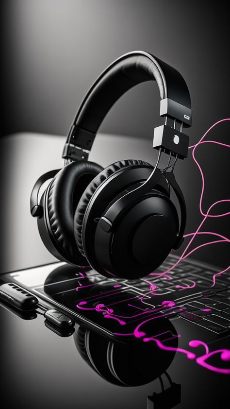
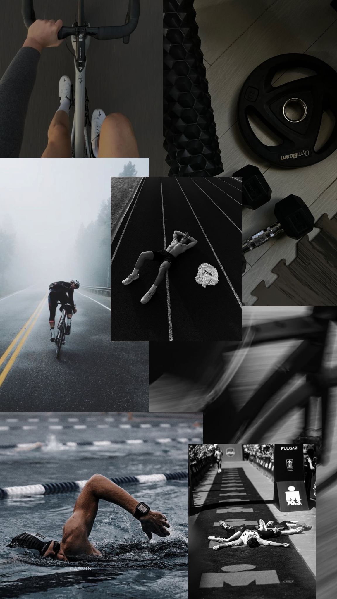

Mes moments de détente
Parce qu'il faut bien déconnecter, voici comment je recharge mes batteries.

Gaming & Stratégie
Rien de tel qu'une bonne session de jeu vidéo pour décompresser. J'apprécie particulièrement les jeux de stratégie et de logique qui continuent de stimuler la réflexion, mais d'une manière totalement différente du code.

Musique
La musique m'accompagne partout. J'écoute beaucoup de Lo-Fi et de musiques d'ambiance, c'est ma bande-son idéale pour rester concentré pendant mes longues sessions de programmation ou simplement m'évader.

Sport & Nature
Pour contrer les heures passées assis devant l'écran, j'aime m'aérer l'esprit. Le sport et les petites balades me permettent de garder un bon équilibre physique et mental, indispensable pour la créativité.